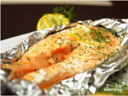
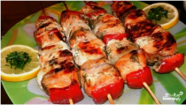
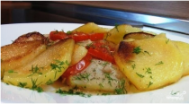
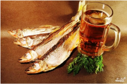

Рецепты рыбных блюд
Подборка наиболее интересных рецептов
Стейк из кеты в духовке

Если вы не можете устоять перед ароматом и вкусом рыбы, тогда предлагаю взглянуть на этот удивительно простой рецепт стейка из кеты в духовке, который станет отличным вариантом для обеда или ужина.
Подробнее на сайте povar.ru
перейти на сайт
Шашлык из кеты

Из филе рыбы кеты можно сделать замечательный шашлык. Кроме кеты, используется репчатый лук и болгарский перец. Шашлык готовится в духовке, хотя можно и на открытом огне. Одним словом, рекомендую!
Подробнее на сайте povar.ru
перейти на сайт
Скумбрия, запечённая в духовке
Если любите скумбрию, то скумбрия, запеченная в духовке, вам обязательно придется по вкусу. Довольно простое, но в то же время оригинальное блюдо - рекомендую попробовать!
Подробнее на сайте povar.ru
перейти на сайт
Камбала в сметане
Вкусная и полезная рыба, мягкая и нежная, да запеченная в сметане - слюнки потекут даже у сытого человека! А готовится сие великолепие очень легко и очень даже просто.
Подробнее на сайте povar.ru
перейти на сайт
Камбала в духовке с картошкой

Камбала – удивительная рыба. У нее плоское тело, а глаза расположены с одной стороны головы. Она привлекает внимание своим серебристым цветом, ее так и хочется попробовать!
Подробнее на сайте povar.ru
перейти на сайт
Корюшка копчёная

Если вы не пробовали копченую корюшку, рекомендую немедленно это исправить. Особенно если есть возможность приготовить это блюдо своими руками. Как это сделать – читайте рецепт.
Подробнее на сайте povar.ru
перейти на сайт
**********